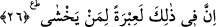

önderlik iddiâsı, ilahlık iddiâsında bulunmayı gerektirmez. Tıpkı diğer dehrî ve
inkârcıların dedikleri gibi. Çünkü o inkârcılar, her ne kadar önder iseler de ilah
olduklarını iddiâ etmemişlerdir.
26. Elbette bunda korkan kimseler için büyük bir ibret vardır.
“Elbette bunda” yâni zikredilen Fir’avn kıssasında ve onun yaptıklarında “korkan
kimseler için bir” büyük “ibret vardır”. Bu ibret şanı korkmak olan kimseler içindir.
Şanı korkmak olan kimse de şânı mârifet olan kimsedir. Yani Allah’ı ve onun işlerini
bilen ârif kişi ondan korkar. Allah’a isyan edip karşı gelmez, onun peygamberlerine
karşı gelmez. Çünkü başına azab geleceğinden korkar. Akıllı kişi başkasının
durumundan ibret alan kimsedir.
Bedbaht birisi bir musîbete düşerse
İyi talihliler ondan ders alırlar.
Sen cezâdan önce af kapısını çal ki,
Sopa altında feryâd etmenin faydası yoktur.
Yarın sînende utanç kalmaması için
Başını gaflet yakasından dışarı çıkar.
[4]. Bk. Deylemi, hadis no: 3651.
[5]. Tirmizi, Kıyamet 18.
[6]. Ebû Dâvud, Libas 26.